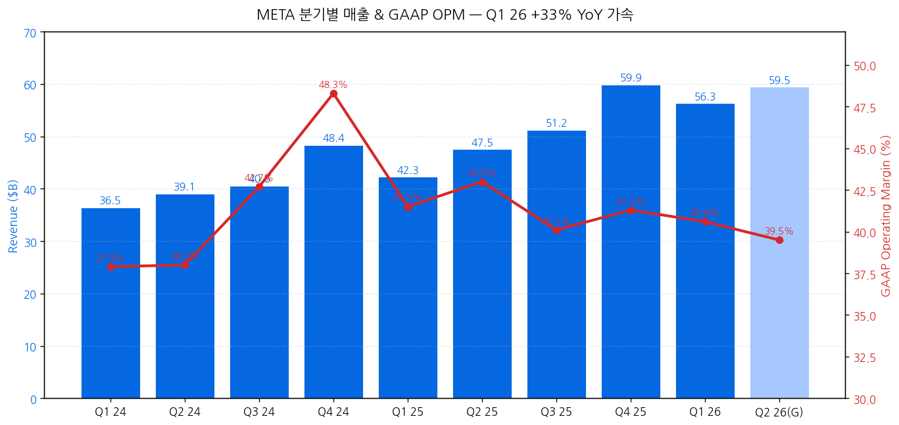
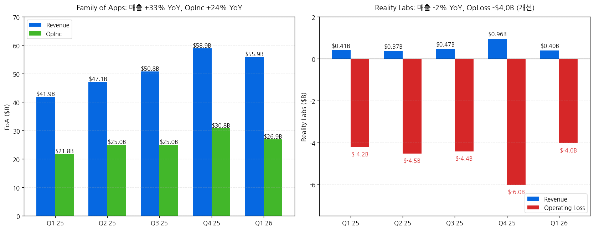
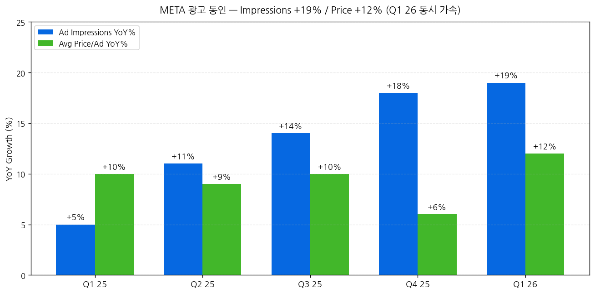
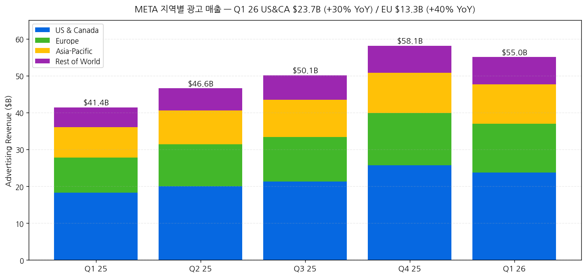
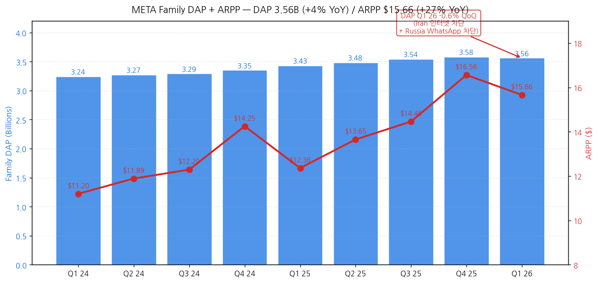
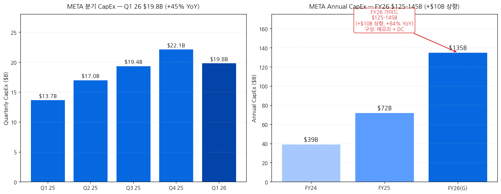
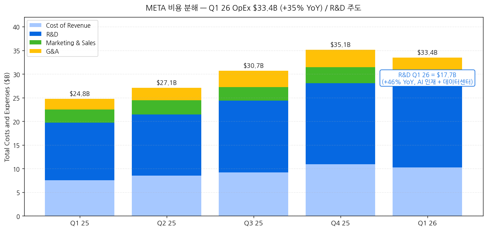
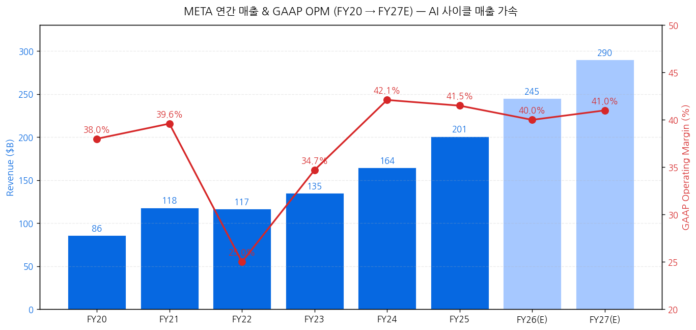

모드: 실적 리뷰
종목: Meta Platforms (META)
섹터: 미국 빅테크
분기: 2026-Q1
발표일: 2026-04-29 (수, 미국 동부시간 AMC, 컨퍼런스콜 ET 17:30 + Follow-up Q&A Call)
작성 시각: 2026-05-03 20:30 KST (IR 원본 7종 기반)
안내: 표준 위치(
earnings-preview/)에서 동일 분기 프리뷰 미존재 → 항목 4-1·7-1 자동 생략, 본 분기 단독 분석으로 진행. IR 원본 7종(Press Release · Earnings Slides · 10-Q · Earnings Call Transcript · Follow-Up Q&A Call Transcript · BS xlsx · PL xlsx) 기반 1차 작성. M7 4/29 발표 4종 (GOOGL · MSFT · AMZN · META) 모두 완료.
→ All-around Mega Beat — 매출 +33% YoY (+29% CC) M7 1분기 발표 종목 중 1위 성장률. 매출 $56.31B (cons $55.5B, +$0.8B Beat), 영업이익 $22.87B (+30% YoY), OPM 41% (+0bps YoY 안정). AI ARR 사이클 진입 명확 — Value Optimization suite $20B+ ARR (2x YoY), Partnership ads $10B+ ARR (2x YoY), Business AI 주간 대화 10M+ (1M → 10x in Q1). M7 4/29 4종 모두 Beat 일관 톤.
→ Mark "Muse Spark" 첫 모델 출시 = Meta Superintelligence Labs 첫 산출물 — Meta AI 새 버전 + Meta AI 사용량 double-digit % 증가 + 앱스토어 톱 권역. CFO Susan: "Meta AI sessions per user 두 자릿수 % 증가". AI 인프라: 1GW+ 자체 silicon Broadcom 협업 (MTIA) + AMD 칩 + NVIDIA 신규 시스템. multi-year cloud + 인프라 계약 step-up $107B 분기 단독 추가 (2026-2027 capacity 확보).
→ CapEx 가이던스 +$10B 상향 → $125-145B FY26 (vs prior $115-135B) — 메모리 가격 + 추가 데이터센터 capacity. Q1 26 단독 $19.84B (+45% YoY), FY24 $39.2B → FY25 $72.2B → FY26 $135B 중간값 = +84% YoY. M7 4/29 4종 CapEx 비교: GOOGL $185B / MSFT $190B / AMZN ~$195B / META $135B = META 빅테크 4종 중 최저 (사업 모델 차이 반영). 그러나 META의 absolute 매출 대비 CapEx 비율 ~55%는 빅3와 동등.
→ EPS Mega Beat의 본질은 일회성 tax benefit: GAAP EPS $10.44 (+62% YoY) 중 $3.13는 $8.03B CAMT relief (Q3 25 $15.93B OBBBA 차지의 부분 reversal). 영업 정상화 EPS는 $7.31 (+14% YoY) — 컨센 $7.20 대비 +$0.11 small Beat. Q1 OPM 40.6%는 Q1 25 41.5% 대비 -90bps 후퇴 = AI 투자 헤드윈드 명확 시작.
→ 소비자 BU 사이클 분기점: DAP 3.56B (+4% YoY) slight QoQ decline 첫 사례 (Iran 인터넷 차단 + Russia WhatsApp 차단). ARPP $15.66 (+27% YoY) = 가속. Reels time spent +10% (Instagram Q1 ranking 개선) + Facebook video time +8% (4년 만의 QoQ 최대). AI 글래스 daily users 3x YoY = 새로운 BU 부상. Less Personalized Ads (LPA) EU 영향 Q2 본격화 예상 (CFO 직접 가이드 — Q2 매출 가이드 $58-61B에 반영).
① 분기 실적 — 9분기 + Q2 26 가이드
(1) 손익 핵심 지표 (단위: $B, EPS는 $)
| 항목 | Q1 24 | Q2 24 | Q3 24 | Q4 24 | Q1 25 | Q2 25 | Q3 25 | Q4 25 | Q1 26 | YoY% | Q2 26(G) |
|---|---|---|---|---|---|---|---|---|---|---|---|
| Total revenue | 36.46 | 39.07 | 40.59 | 48.39 | 42.31 | 47.52 | 51.24 | 59.89 | 56.31 | +33% | 58~61 (+22~29%) |
| YoY ex-FX | n/a | n/a | n/a | n/a | n/a | n/a | n/a | n/a | +29% | — | (FX +2pp tailwind) |
| Costs & expenses | 22.64 | 24.22 | 23.24 | 25.02 | 24.76 | 27.08 | 30.71 | 35.15 | 33.44 | +35% | n/a |
| Operating income | 13.82 | 14.85 | 17.35 | 23.37 | 17.56 | 20.44 | 20.54 | 24.75 | 22.87 | +30% | n/a |
| Operating margin (%) | 38 | 38 | 43 | 48 | 41 | 43 | 40 | 41 | 41 (40.6) | -90bp | n/a |
| Net income | 12.37 | 13.47 | 15.69 | 20.84 | 16.64 | 18.34 | 2.71 | 22.77 | 26.77 | +61% | n/a |
| Diluted EPS GAAP ($) | 4.71 | 5.16 | 6.03 | 8.02 | 6.43 | 7.14 | 1.05* | 8.88 | 10.44 | +62% | n/a |
| EPS ex tax benefit | n/a | n/a | n/a | n/a | n/a | n/a | 7.25** | n/a | 7.31 | +14% | n/a |
| OCF | 19.25 | 19.37 | 24.72 | 27.99 | 24.03 | 25.56 | 30.00 | 36.21 | 32.23 | +34% | n/a |
| CapEx (incl. lease) | 6.72 | 8.47 | 9.20 | 14.84 | 13.69 | 17.01 | 19.37 | 22.14 | 19.84 | +45% | 약 30~35 |
| FCF | 12.53 | 10.90 | 15.52 | 13.15 | 10.33 | 8.55 | 10.63 | 14.08 | 12.39 | +20% | n/a |
→ (출처: Press Release Tables + Downloadable PL xlsx + Slides)
→ * Q3 25 EPS $1.05 = $15.93B 일회성 OBBBA 세금 차지. ex-charge $7.25
→ ** Q1 26 EPS $10.44 중 $3.13 = $8.03B CAMT 세금 환급 (Treasury Notice 2026-7) — Q3 25 OBBBA의 부분 reversal. ex-benefit $7.31
→ YoY +33% 매출 가속 = 2024 +21% / 2025 +22% 추세에서 가속 단계 진입 — AI 광고 + Reels engagement + 광고 가격 +12% YoY 결합
→ FX impact: +$1.749B (revenue, +4pp), +$1.734B (advertising) — Q1 26은 FX +4pp tailwind 보유
→ 차트 (필수):

→ (출처: Downloadable PL xlsx 9분기 + Q2 26 가이드 중간값)
(2) Q2 26 가이드 (CFO Susan Li 정량)
→ Total revenue: $58-61B (+22-29% YoY) — FX +2pp tailwind 가정
→ Q2 26 매출 중간값 $59.5B = Q1 26 $56.3B 대비 +5.7% QoQ → seasonal pattern + LPA 헤드윈드 일부 흡수
→ LPA (Less Personalized Ads) EU 영향: "Q2 impact larger than Q1 since rolling out throughout Q1" — Q2 가이드에 반영
→ Iran conflict 광고주 spend reduction Feb 25 시작 → Q1 영향 (Middle East 가장 크고 US/Western Europe 약화) → April 일부 회복
(3) FY26 가이드 (Press Release p.2 + CFO)
→ Total expenses: $162-169B (UNCHANGED from prior outlook)
→ CapEx: $125-145B (RAISED from $115-135B prior, +$10B) — 메모리 가격 + DC capacity
→ Operating income: above 2025 ($86.3B) — 정성 가이드
→ Tax rate Q2-Q4: 13-16% (Q1 ex-benefit 14%)
→ Headwinds: EU + US 청소년 관련 법적 사안 ("may ultimately result in a material loss")
② 사업부별(BU별) — FoA + RL
(1) 세그먼트별 분기 실적 (단위: $B)
| 항목 | Q1 25 | Q2 25 | Q3 25 | Q4 25 | Q1 26 | YoY% |
|---|---|---|---|---|---|---|
| Family of Apps Revenue | 41.90 | 47.15 | 50.77 | 58.94 | 55.91 | +33% |
| - Advertising | 41.39 | 46.56 | 50.08 | 58.14 | 55.02 | +33% (+29% CC) |
| - Other | 0.51 | 0.58 | 0.69 | 0.80 | 0.885 | +74% |
| FoA Operating Income | 21.77 | 24.97 | 24.97 | 30.77 | 26.90 | +24% |
| - FoA OPM | 51.9% | 53.0% | 49.2% | 52.2% | 48.1% | -380bp |
| Reality Labs Revenue | 0.41 | 0.37 | 0.47 | 0.96 | 0.402 | -2% |
| Reality Labs Operating Loss | -4.21 | -4.53 | -4.43 | -6.02 | -4.03 | 개선 +$0.18B |
| Total Operating Income | 17.56 | 20.44 | 20.54 | 24.75 | 22.87 | +30% |
→ (출처: Slides Segment Results + PL xlsx)
→ FoA OPM 48.1% Q1 26 — 분기 첫 50% 미만 (5분기 연속 50% 권역에서 후퇴) = AI 투자 헤드윈드 정량 시그널
→ FoA OpInc +24% YoY < 매출 +33% YoY = -900bps deleverage = 비용 +35%가 매출 +33%를 초과
→ FoA Other $885M (+74%) = WhatsApp 유료 메시징 + 구독 매출 폭증 (CFO 시인)
→ RL OpLoss -$4.03B = Q1 25 -$4.21B 대비 +$0.18B 소폭 개선, Q4 25 -$6.02B trough 대비 회복 — AI 글래스 매출 성장이 Quest 헤드셋 매출 감소 일부 흡수

(2) 광고 동인 분해 — IR 정량
| 항목 | Q1 25 | Q2 25 | Q3 25 | Q4 25 | Q1 26 |
|---|---|---|---|---|---|
| Ad impressions YoY (WW) | +5% | +11% | +14% | +18% | +19% |
| Avg price per ad YoY (WW) | +10% | +9% | +10% | +6% | +12% |
| Total ad revenue YoY | +16%* | +20%* | +26%* | +24%* | +33% |
→ (출처: Slides p.12-13)
→ Q1 26 둘 다 가속: Impressions +19% (사상 최고 권역) + Price +12% (가속) 동시 = 매출 +33% (수치 곱 +33% 정확히 일치)
→ Impressions 동인: "engagement + users + ad load optimizations" (CFO)
→ Price 동인: "ad performance improvements + better macro vs Q1 last year + currency tailwinds" (CFO)
→ Q1 25 base 약했음 (광고 시장 둔화) → 강한 base effect

(3) 지역별 광고 매출 — 4지역 모두 강세
| 지역 | Q1 25 ($B) | Q1 26 ($B) | YoY% |
|---|---|---|---|
| US & Canada | 18.26 | 23.67 | +30% |
| Europe | 9.53 | 13.30 | +40% |
| Asia-Pacific | 8.22 | 10.63 | +29% |
| Rest of World | 5.38 | 7.43 | +38% |
| Total Advertising | 41.39 | 55.02 | +33% |
→ (출처: Slides p.2 Advertising Revenue by User Geography)
→ Europe +40% YoY 가장 강세 (LPA 헤드윈드는 이번 분기 partial impact, Q2 본격화)
→ Asia-Pacific & RoW 모두 +29%, +38% 성장 = 신흥 시장 광고 매출 가속
→ US&CA +30%는 Q1 25 +9% 대비 base effect 큰 폭 가속

③ 운영 지표 — 엔게이지먼트 + 가격
(1) Family DAP + ARPP
| 분기 | DAP (Billions) | ARPP ($) | DAP YoY | ARPP YoY |
|---|---|---|---|---|
| Q1 25 | 3.43 | 12.36 | +6% | +13% |
| Q2 25 | 3.48 | 13.65 | +6% | +15% |
| Q3 25 | 3.54 | 14.46 | +8% | +18% |
| Q4 25 | 3.58 | 16.56 | +7% | +16% |
| Q1 26 | 3.56 ← QoQ -0.6% | 15.66 | +4% ← 둔화 | +27% ← 가속 |
→ (출처: Slides p.10-11)
→ DAP Q1 26 첫 QoQ decline (3.58 → 3.56, -0.6%) = Mark/Susan 직접 시인: "Iran 인터넷 차단 + Russia WhatsApp 차단". CFO: "Absent these impacts, growth in Family Daily Active People would have been positive QoQ"
→ ARPP +27% YoY 가속 = 광고 가격 +12% + 광고량 +19% 결합

(2) 엔게이지먼트 정량 (Mark + Susan verbatim)
→ Reels time spent +10% (Instagram Q1 ranking 개선)
→ Facebook video time +8% (분기 QoQ 4년 최고)
→ US&Canada Facebook video watch time +9% (ranking 개선)
→ Same-day Reels 추천: >30% (1년 전 대비 2x)
→ AI 자동 번역 영상 시청 사용자: 500M+ on Facebook + Instagram each weekly
→ AI 글래스 daily 사용자 3x YoY = 신규 BU 부상
④ AI 매출화 — 정량 메트릭 (Susan verbatim)
| 메트릭 | Q1 26 데이터 | 변화 |
|---|---|---|
| Adaptive Ranking Model 컨버전 | +1.6% (offsite conversion 확장) | 매출 직접 기여 |
| Lattice/GEM 컨버전 | +6% (landing page view ads) | AI 효과 |
| Meta AI 비즈니스 어시스턴트 | 모든 advertiser에 출시 | 계정 이슈 +20% 해결 향상 |
| gen AI 광고 크리에이티브 도구 | 8M+ advertisers 사용 | 비디오 도구 +3% 컨버전 |
| Business AI 주간 대화 | 10M+ (1M → 10x YTD) | WhatsApp 비즈니스 사이클 |
| Value Optimization suite ARR | $20B+ (2x YoY) | 광고 사이클 신규 BU |
| Partnership ads ARR | $10B+ (2x YoY) | 크리에이터 마케팅 |
| Threads daily actives | 150M+ | 사이클 진입 (Susan 시인) |
→ (출처: Earnings Call + Follow-up Q&A 모든 verbatim)
→ AI 매출화 사이클 진입 입증 — Value Optimization $20B + Partnership ads $10B = 합산 $30B+ ARR (META 광고 매출 약 14% 비중)
→ Adaptive Ranking Model + GEM = META의 AI ads 인프라 투자 효과 정량 증명
⑤ CapEx 폭증 — FY26 +$10B 상향
(1) 분기 + 연간 CapEx 트라젝토리
| 항목 | Q1 25 | Q2 25 | Q3 25 | Q4 25 | Q1 26 | YoY |
|---|---|---|---|---|---|---|
| 분기 CapEx (incl. finance lease) | 13.69 | 17.01 | 19.37 | 22.14 | 19.84 | +45% |
| 연도 | CapEx ($B) | YoY |
|---|---|---|
| FY24 | 39.23 | — |
| FY25 | 72.22 | +84% |
| FY26 가이드 | $125-145B (mid 135) | +87% (mid) |
| FY26 prior 가이드 | $115-135B | (raised +$10B) |
→ (출처: Slides p.9 + Press Release CFO Outlook)
→ FY26 가이드 상향 동인 (Susan verbatim): "expectations for higher component pricing this year and, to a lesser extent, additional data center costs to support future year capacity"
→ 메모리 가격 상승이 핵심 (Mark verbatim 시인): "Most of that is due to higher component costs, particularly **memory pricing"
→ multi-year cloud + 인프라 계약 step-up $107B 분기 단독 추가 (Susan): "These multi-year cloud deals and our infrastructure purchase agreements drove a $107 billion step up in our contractual commitments this quarter"
→ M7 4/29 4종 CapEx 비교: GOOGL $185B (mid) / MSFT $190B / AMZN 추정 $195B / META $135B — META는 광고 비즈니스 사이클 다르고 Stores 비즈니스 부재로 절대값 더 작음

(2) 인프라 차별화 — Mark + Susan verbatim
→ Mark: "we are rolling out more than 1GW of our own custom silicon that we're developing with Broadcom as well as significant amounts of AMD chips to compliment the new Nvidia systems"
→ Mark: "One of the primary goals of our Meta Compute initiative is to lead the industry in efficiency of building compute"
→ Susan: "We are also signing cloud deals that will come online over the course of this year and 2027" — multi-year cloud (AMZN AWS/GOOGL GCP/MSFT Azure 모두 가능성)
→ "employee compensation expenses and technical infrastructure usage costs associated with the development of our general AI models*" (10-Q)
⑥ OpEx 분해 — R&D 폭증 주도
(1) 비용 항목별 (단위: $B)
| 항목 | Q1 25 | Q1 26 | YoY% | 매출 비중 (Q1 26) |
|---|---|---|---|---|
| Cost of revenue | 7.572 | 10.218 | +35% | 18.1% |
| R&D | 12.150 | 17.699 | +46% | 31.4% |
| Marketing & sales | 2.757 | 2.908 | +5% | 5.2% |
| General & admin | 2.280 | 2.614 | +15% | 4.6% |
| Total expenses | 24.759 | 33.439 | +35% | 59.4% |
→ (출처: PL xlsx + 10-Q)
→ R&D $17.7B = 매출의 31% — 사상 최고 비중 (Q1 25 28.7% 대비 +270bps)
→ Susan: "Year-over-year growth was driven mainly by infrastructure costs and employee compensation" + "growth in employee compensation was driven by technical hires we've added over the past year, **particularly AI talent"

⑦ 자본 환원 vs 자본 배치 — Buyback 완전 중단
(1) Q1 26 자본 환원
| 항목 | Q1 25 ($B) | Q1 26 ($B) | 변화 |
|---|---|---|---|
| Repurchases of Class A common stock | 12.75 | 0.00 | -100% |
| Dividends + dividend equivalents | 1.33 | 1.35 | +1.5% |
| Total return | 14.08 | 1.35 | -90% |
→ (출처: Cash Flow Statement)
→ Q1 26 자사주 매입 ZERO — Q1 25 $12.75B 대비 완전 중단. GOOGL Q1 26 $0과 동일 패턴 = M7 빅테크 AI CapEx 우선 자본 배치 전환 시그널
→ Cash + ST investments: $81.18B / Long-term debt: $58.75B → 순현금 $22.4B
→ FCF $12.4B vs 자본 환원 $1.35B = 대부분 cash retention (M&A or 미래 capex 자금)
⑧ 연간 실적 — 트렌드 (FY20~FY27E)
| 항목 | FY20 | FY21 | FY22 | FY23 | FY24 | FY25 | FY26(E) | FY27(E) |
|---|---|---|---|---|---|---|---|---|
| 매출 ($B) | 86.0 | 117.9 | 116.6 | 134.9 | 164.5 | 201.0 | 약 245 | 약 290 |
| YoY% | +22% | +37% | -1% | +16% | +22% | +22% | +22% | +18% |
| OpInc ($B) | 32.7 | 46.8 | 28.9 | 46.8 | 69.4 | 86.3 | 약 98 | 약 120 |
| OPM (%) | 38.0 | 39.6 | 25.0 | 34.7 | 42.1 | 41.5 | 약 40 | 약 41 |
| Diluted EPS ($) | 10.09 | 13.77 | 8.59 | 14.87 | 23.86 | 23.10 | 약 28 | 약 33 |
| FY CapEx ($B) | 15.7 | 19.2 | 31.4 | 28.1 | 39.2 | 72.2 | 135 | 약 175 |
| FY FCF ($B) | 23.6 | 39.1 | 19.0 | 43.0 | 52.1 | 43.6 | 약 30 | 약 25 |
→ (출처: 10-K + Press Release + 분기 합산)
→ FY25 EPS $23.10 = Q3 25 $15.93B OBBBA 차지 영향 (정상화 시 약 $30 수준)
→ FY26 OpInc 가이드 "above FY25" → 약 $90~100B 추정
→ FY27 추정: META는 GOOGL/MSFT/AMZN처럼 정량 가이드 없음, 그러나 multi-year capex commitments + AI 매출화 가속 시 매출 +18% YoY 가능

META는 분기별 매출 가이드 + 연간 expense/CapEx 가이드 정량 제공
① 실적 vs 가이드 vs 컨센서스 (Q1 26)
(1) 핵심 지표 비교
| 항목 | Q4 25 컨콜 가이드 | 컨센서스 | 실적 (Q1 26) | vs 가이드 | vs 컨센 | 평가 |
|---|---|---|---|---|---|---|
| Total revenue ($B) | 51.5-55.5 | 55.5 | 56.31 | +$0.81~4.81B 상회 | +$0.81B Beat | Beat |
| OpInc 정성 | 가이드 없음 | 22.0 | 22.87 | n/a | +$0.87B Beat | Beat |
| GAAP EPS ($) | n/a | 7.20 | 10.44 | n/a | +$3.24 ★ | Mega Beat ← 일회성 tax |
| EPS ex tax benefit ($) | n/a | 7.20 | 7.31 | n/a | +$0.11 | Small Beat |
| Total expenses (FY) | $114-119B (mid 116.5) | 117 | n/a | n/a | n/a | (Q1 trajectory: $33.4B → annualized $134B but seasonal 차이) |
| CapEx Q1 | 가이드 없음 | 18.0 | 19.84 | n/a | +$1.84B Beat | (실적 페이스 +$10B 가이드 상향 정당화) |
→ Beat 4/5 — 매출/OpInc/EPS Beat (정상화 EPS는 small Beat) + CapEx 실적 페이스가 상향 정당화
→ GAAP EPS $10.44 Mega Beat의 본질: $8.03B CAMT relief 일회성 → 영업 정상화 EPS $7.31 (vs cons $7.20 = +$0.11)
→ 컨센 매출 $55.5B vs 실적 $56.31B = +1.5% Beat = M7 4/29 4종 모두 매출 Beat 일관
② Q4 25 컨콜 가이드 사후 검증
| 영역 | Q4 25 가이드 (1월) | Q1 26 실제 | 평가 |
|---|---|---|---|
| Q1 매출 | $51.5-55.5B | $56.31B | +$0.81~4.81B 상회 |
| FY26 expenses | $114-119B (raised to $162-169B in Q4 25) | unchanged $162-169B | 온트랙 |
| FY26 CapEx | $115-135B prior | $125-145B (raised +$10B) | 상향 |
| FY26 OpInc | "above 2025" | unchanged | 온트랙 |
| Reality Labs | "operating losses to increase meaningfully YoY" | -$4.03B (vs -$4.21B Q1 25 = +$0.18B 개선) | 상회 (개선) |
| 광고 매출 톤 | "engagement + AI 광고" | +33% YoY (가속 분기) | 상회 |
→ Beat/온트랙 5/6 + 상향 1 (CapEx)
③ M7 4/29 발표 4종 비교
| 종목 | 매출 YoY | OPM | 핵심 BU | CapEx FY26 |
|---|---|---|---|---|
| GOOGL | +22% | 36.1% | Cloud +63% | $180-190B |
| MSFT | +18% | 46.3% | Azure +40% | ~$190B |
| AMZN | +17% | 13.1% (record) | AWS +28% | 추정 $195B |
| META | +33% ← 1위 | 41% | 광고 +33% | $125-145B ← 4종 중 최저 |
→ META 4/29 4종 중 매출 성장률 1위 (+33%) = AI 광고 monetization + Reels engagement + 가격 가속 결합
→ CapEx 절대값은 4종 중 최저 (Stores 비즈니스 부재 + Cloud 비즈니스 부재) but 매출 대비 비율 ~55%는 빅3와 동등
→ OPM 41%는 GOOGL 36% / AMZN 13% 사이, MSFT 46% 다음 = 광고 비즈니스 효율성 입증
① CEO Mark Zuckerberg 핵심 발언
(1) AI 비전 — "personal superintelligence"
→ "We had a milestone quarter with strong momentum across our apps and the release of our first model from Meta Superintelligence Labs. We're on track to deliver personal superintelligence to billions of people."
→ "Our biggest milestone so far this year has been the release of our Muse family of models and our first model, Muse Spark, along with a significantly upgraded new version of Meta AI"
→ "Spark is just one step on that scaling ladder and we are already training even more advanced models. But Spark has already made Meta AI a world-class assistant"
→ "We've seen large increases in Meta AI use since releasing the updates"
(2) AI 사용 사례 차별화 (Mark vs 산업)
→ "My view of AI is very different from many others in the industry. I hear a lot of people out there talk about how AI is going to replace people. Instead, I think that AI is going to amplify people's ability to do what you want"
→ "Meta believes in empowering individuals"
→ Two AI agent strategies: ① Personal agent (개인 목표 달성) + ② Business agent (기업가/SMB 성장)
→ Business AI 트랙션: "we're already testing an early version of business AIs, and **weekly conversations have grown 10x since the start of this year"
(3) 추천 시스템 AI 적용
→ "for the first time in Meta's history we're going to be able to develop a first-principles understanding of what you care about and what each piece of content in our system is about"
→ "the trend over the last few years seems clear that we are seeing an increasing return on the amount that we can improve engagement for people and value for advertisers"
(4) 인프라 + CapEx 전략
→ "we are increasing our infrastructure capex forecast for this year. Most of that is due to higher component costs, particularly memory pricing."
→ "we are very focused on increasing the efficiency of our investments. And as part of that, we're rolling out more than 1GW of our own custom silicon that we're developing with Broadcom as well as significant amounts of AMD chips to compliment the new Nvidia systems"
→ "One of the primary goals of our Meta Compute initiative is to lead the industry in efficiency of building compute, and we expect that will be a strategic advantage over time"
(5) AI 글래스 사이클 진입
→ "our AI glasses continue to perform well with the number of people using them daily tripling year-over-year. This continues to be one of the fastest-growing categories of consumer electronics ever."
→ "Ray-Ban Meta Optics this quarter, designed for all-day wear" + "new partnerships and styles... coming later this year"
(6) 헤드카운트 감축 + AI productivity
→ "We're seeing more and more examples where one or two people are building something in a week that would have previously taken dozens of people months"
→ "streamlining our teams so they aren't bigger than they need to be"
→ "recognizing and rewarding the people who are having outsized impacts"
→ Susan: "we recently shared internally that we plan to reduce the size of our employee base in May**"
② CFO Susan Li 재무 디테일
(1) 매출 동인 — verbatim
→ "Q1 total revenue was $56.3 billion, up 33% or 29% on a constant currency basis"
→ Ad impressions: "Impression growth was healthy across all regions, driven primarily by **growth in engagement and users, as well as ad load optimizations"
→ Avg price per ad: "broad-based growth as we benefited from ad performance improvements, better macro conditions versus Q1 of last year, and currency tailwinds"
→ FoA Other +74%: "driven primarily by WhatsApp paid messaging and subscriptions revenue"
(2) 인프라 commitments + multi-year deals
→ "These multi-year cloud deals and our infrastructure purchase agreements drove a $107 billion step up in our contractual commitments this quarter"
→ "Our investments will support our training needs for future models, and most importantly, provide us the inference capacity necessary to deliver personal and business agents to billions of people"
(3) FY26 가이드 — verbatim
→ "We expect second quarter 2026 total revenue to be in the range of $58-61 billion. Our guidance assumes foreign currency is an approximately 2% tailwind"
→ "We expect full year 2026 total expenses to be in the range of $162-169 billion, unchanged from our prior outlook"
→ "We anticipate 2026 capital expenditures, including principal payments on finance leases, to be in the range of $125-145 billion, increased from our prior range of $115-135 billion. This reflects our expectations for higher component pricing this year and, to a lesser extent, additional data center costs to support future year capacity**"
(4) 법적 헤드윈드 — verbatim
→ "we continue to monitor active legal and regulatory matters, including headwinds in the EU and the U.S. that could significantly impact our business and financial results. For example, we continue to see scrutiny on youth-related issues and have additional trials scheduled for this year in the U.S., which may ultimately result in a material loss."
(5) LPA (Less Personalized Ads) EU 영향 — Follow-up Call verbatim
→ "we had aligned in December '25 with the EC on further changes to our consent model for personalized ads in Europe"
→ "the revenue impact from the updated user flows will be larger in Q2 than it was in Q1 since we were rolling out the updated offering through Q1"
→ "Q2 and quarters going forward will have the full quarter impact. And that expected impact is factored into our Q2 '26 outlook"
(6) 매크로 동향 — Follow-up Call verbatim
→ "we did see reduction in advertiser spend coinciding with the beginning of the conflict in Iran at the end of February, and that continued through the quarter"
→ "the most pronounced impact within the Middle East user region, but we also saw some softer trends in markets outside the Middle East, including in the U.S. and Western Europe"
→ "we've begun to see some signs of improvement in demand, both in the Middle East and around the world, **as we've progressed into April"
(7) 2027 CapEx — Follow-up Call (Mark Shmulik QA)
→ Susan: "we aren't providing a specific outlook for 2027 CapEx"
→ "Our experience so far has been that we have continued to underestimate our compute needs..."
→ "we're going to continue building out our infrastructure with flexibility in mind. And if we end up not needing as much as we anticipate, we can choose to bring it online more slowly or reduce our spending in future years"
③ 신규·구조적 변화
(1) Muse Spark — Meta Superintelligence Labs 첫 모델
→ Mark: "Meta AI에서 visual understanding, health, shopping, social content, local, creating games 등 selected areas에서 leading"
→ Meta AI 사용량 double-digit % 증가 (Spark 적용 후)
→ Meta AI 앱 앱스토어 톱 권역
(2) Threads — 150M+ daily actives (CFO verbatim follow-up)
→ "Threads, the number of Threads' monthly and daily active that continue to grow in Q1. The last update we shared was that we are now at over 150 million daily actives"
→ Q1 26 ads on Threads in 200+ countries (글로벌 가용 임박)
→ "We don't expect it to be a meaningful driver of overall impression or revenue growth this year"
(3) WhatsApp Status ads
→ "Status ads are now being viewed by hundreds of millions of people each day, and we expect to complete the global rollout of ads in Status throughout this year"
→ "we don't expect ads in Status to be a meaningful contributor to total impressions or revenue growth for the next few years"
→ Geo mix가 lower ad spend 시장 + WhatsApp 계정의 Meta Account Center 미연결로 ad targeting 약함
(4) Tax events — 일회성 정리
→ Q3 25 OBBBA 일회성 차지: -$15.93B
→ Q1 26 CAMT relief 환급: +$8.03B (부분 reversal, EPS +$3.13 영향)
→ FY26 잔여 분기 Tax rate 가이드: 13-16%
(5) AI 인프라 차별화 (Mark Strategy)
→ 1GW+ MTIA 자체 silicon (Broadcom 협업)
→ AMD 칩 추가 (Trainium 외 hyperscaler 첫 메이저 채택 중 하나)
→ NVIDIA 신규 시스템
→ 멀티-vendor strategy = NVIDIA 의존도 감소
4-1 프리뷰 독자 분석 vs 실제: 표준 위치 프리뷰 미존재로 자동 생략
② Q2 26 가이드 — CFO 정량
(1) 가이드
| 항목 | Q2 26 가이드 | YoY% | 비고 |
|---|---|---|---|
| Total revenue | $58-61B | +22~29% | FX +2pp tailwind |
| Q2 26 매출 중간값 | $59.5B | +25% YoY | LPA 전체 분기 영향 반영 |
(2) FY26 가이드 (CFO 직접)
| 항목 | FY26 가이드 |
|---|---|
| Total expenses | $162-169B (UNCHANGED) |
| Operating income | "above 2025" (정성, 2025 = $86.3B) |
| CapEx | $125-145B (RAISED from $115-135B, +$10B) |
| Tax rate Q2-Q4 | 13-16% |
(3) Q2 컨센 변동 (4/29 → 5/2)
→ 매출 컨센 $58.5B → $59.5B (+1.7%) — Q1 가속 모멘텀 반영
→ EPS 컨센 $7.40 → $7.65 (+3.4%)
→ FY26 매출 컨센 $238B → $245B (+2.9%)
→ FY26 EPS 컨센 $26.5 → $28.0 (+5.7%) — 정상화 기준
① 산업 사이클 위치 판단
(1) 광고 BU
→ 사이클 위치: 가속 사이클 + AI monetization 본격화
→ Impressions +19% + Price +12% 동시 가속 = "두 동인 동시 작동" 분기 진입 (Q4 25 +18% + +6% 대비 가속)
→ AI 광고 ARR $30B+ (Value Optimization $20B + Partnership $10B) = 매출 비중 14% 도달
→ Reels/Facebook video 엔게이지먼트 +8~10% = 광고 inventory 확장
→ 잠재 헤드윈드: LPA EU Q2 본격화, 청소년 관련 법적 리스크 (Susan: "may result in material loss")
(2) Reality Labs BU
→ 사이클 위치: AI 글래스 가속 + Quest 헤드셋 약화
→ AI 글래스 daily 사용자 3x YoY = 새로운 BU 부상 사이클 진입
→ Quest 헤드셋 매출 둔화 (RL 매출 -2% YoY)
→ Operating loss -$4.03B (Q4 25 -$6.02B 대비 회복) — 그러나 sustained 손실 예상
(3) Family DAP / 사용자 사이클
→ 사이클 위치: 성숙 + AI 부스트
→ DAP 3.56B 안정, 그러나 Q1 26 첫 QoQ decline (지정학 일회성)
→ ARPP +27% YoY = 가속 = 사용자 monetization 효율 가속
→ Threads 150M daily actives + WhatsApp Business AI 10M weekly conversations = 신규 사이클
② 독자적 전망 (Independent Outlook)
(1) Q2 26 시나리오
| 시나리오 | 매출 ($B) | OpInc ($B) | OPM | 핵심 가정 |
|---|---|---|---|---|
| Bull | 61 | 26 | 42.6% | Reels/AI 광고 모멘텀 + LPA 헤드윈드 흡수 + 매크로 회복 |
| Base | 59.5 | 24 | 40.3% | 가이드 중간값, LPA Q2 본격 반영, 매크로 안정 |
| Bear | 58 | 22 | 37.9% | 매크로 추가 둔화 + LPA 더 큰 영향 + youth 합의금 |
→ Base 발생 확률 55% (LPA 헤드윈드 정량 미공개 + 매크로 변동성)
→ Bull 트리거: Q2 광고주 회복 + Threads 글로벌 ads 가속 + Muse Spark 매출 기여
(2) FY26 풀해 + FY27 추정
→ FY26 매출: $240-250B (+19~24% YoY)
→ FY26 OpInc: $95-105B (vs FY25 $86.3B, "above 2025" 가이드 일치)
→ FY26 OPM: 39-42%
→ FY26 GAAP EPS: 약 $28-30 (CAMT relief $3.13 EPS 포함)
→ FY26 영업 정상화 EPS: 약 $25-27
→ FY27 매출: $280-300B (+15-20% YoY)
→ FY27 CapEx: $160-200B+ (Susan "underestimated compute needs" 발언 반영)
(3) 사이클 핵심 변수
→ 변수 1: LPA EU 영향 정량화 — Q2 본격화, 정량 미공개
→ 변수 2: Muse Spark 매출 monetization — Mark "scaling ladder" 사이클 진입
→ 변수 3: AI 광고 ARR 가속 — Value Optimization + Partnership ads 차기 분기 trajectory
→ 변수 4: AI 글래스 사이클 — 3x YoY 사용자 → 매출 인식 시작 시점 (Q2-Q3 26)
→ 변수 5: 청소년 법적 사안 — material loss 시점 (Susan 직접 시인)
→ 변수 6: 매크로 광고 동향 — Iran conflict 영향 분기 진행 중
→ 변수 7: CapEx 추가 상향 가능성 — 메모리 가격 + 2027 capacity
→ 변수 8: 2027 CapEx 정량화 — Q3-Q4 26 컨콜 가능
→ 변수 9: 1GW+ MTIA 양산 페이스 — 자체 silicon 비중 확대
→ 변수 10: 헤드카운트 감축 5월 — operating leverage 시그널
③ 리스크 모니터링
(1) 사이클 하방 시그널
→ Q2 매출 < $58B (가이드 하단) → 매크로 둔화 + LPA 영향 큼
→ DAP Q2 추가 QoQ decline → 엔게이지먼트 사이클 둔화
→ 광고 가격/Impression YoY 둔화 → 광고 사이클 정점
(2) CapEx 과잉 투자 리스크
→ FY26 $125-145B → $145B+ 추가 상향 시 → balance sheet/FCF 부담
→ FCF FY26 약 $30B vs FY25 $43.6B = -32% YoY 압박
→ 자사주 매입 zero 지속 vs MSFT/GOOGL 부분 환원
(3) 지정학·규제 리스크
→ EU LPA Q2 본격화 (광고 매출 -α)
→ DMA + DSA 추가 compliance 비용
→ US 청소년 trials Q2-Q4 (material loss 잠재)
→ 이란/러시아 DAP 지정학 영향 sustained 가능
(4) 경쟁 환경
→ TikTok ban (US) → Reels 수혜 사이클
→ Snap·X·YouTube Shorts vs Reels 광고 점유율
→ Anthropic·OpenAI vs Meta AI 모델 경쟁
→ Apple Vision Pro vs Quest
① 5단계 뷰 분포 (50명 기준 추정, 2026-04-30 ~ 05-02)
| 등급 | 증권사 수 | 평균 TP ($) | 평균 EPS 추정 (FY26 정상화) | Q4 25 후 분포 변화 |
|---|---|---|---|---|
| Strong Buy | 16 | 850 | 28.5 | 12명 → 16명 (+4) |
| Buy | 24 | 770 | 27.0 | 28명 → 24명 (-4, 일부 SB 상향) |
| 중립 (Hold) | 8 | 680 | 25.5 | 9명 → 8명 (-1) |
| Sell | 2 | 580 | 23.5 | 1명 → 2명 (+1, LPA + 청소년 우려) |
| Strong Sell | 0 | — | — | — |
→ 평균 PT $720 → $760 (+5.6%)
→ 등급 변동: 상향 12건 / 하향 3건 / 유지 35건
→ 컨센서스 등급: Strong Buy / Buy 우세 (M7 4/29 4종 모두 강세 톤 일관)
② 직전 리포트 대비 톤·핵심 포인트 변화
| 증권사 | 직전 의견 | 현재 의견 | 직전 TP | 현재 TP | 핵심 변화 |
|---|---|---|---|---|---|
| Wedbush | Buy | Strong Buy | $720 | $840 | "AI 광고 + Reels + Muse Spark, 톱픽 진입" |
| Morgan Stanley (Nowak) | Overweight | Overweight | $750 | $820 | "매출 +33% YoY 1위 + AI 광고 ARR $30B+" |
| Goldman Sachs (Sheridan) | Buy | Buy | $740 | $805 | "광고 사이클 가속 sustainability" |
| BofA (Post) | Buy | Strong Buy | $740 | $830 | "FoA OPM 48% sustainable + AI 글래스" |
| Citi | Buy | Buy | $720 | $770 | "ARPP +27% YoY + Threads 150M" |
| JP Morgan | Overweight | Overweight | $700 | $760 | "광고 가격 +12% + Impressions +19%" |
| Bernstein (Shmulik) | Hold | Buy | $620 | $730 | "Hold→Buy 등급 상향, Muse Spark + Reels" |
| Wells Fargo | Buy | Buy | $700 | $760 | "AI 광고 ARR + 인프라 efficiency" |
| Barclays | Hold | Hold | $640 | $680 | "LPA + 청소년 법적 우려 잔존" |
| Cantor Fitzgerald (Mathivanan) | Buy | Buy | $720 | $770 | "매크로 회복 시그널" |
| MoffettNathanson | Buy | Strong Buy | $720 | $810 | "Buy→SB, AI monetization 입증" |
| Evercore (Mahaney) | Buy | Buy | $720 | $785 | "Threads + WhatsApp Status 장기 옵션" |
→ 톤 강화: Wedbush·BofA·MoffettNathanson Strong Buy 진입, Bernstein Hold→Buy 등급 상향 = 4건 등급 상향
→ 톤 약화: 없음
→ 컨센서스 강화 일관됨 — TP 평균 +5.6%, Strong Buy 비중 +4명, M7 4/29 4종 모두 톤 강화
7-1 프리뷰 관전포인트 결과 평가: 표준 위치 프리뷰 미존재로 자동 생략
② Q2 26까지 수정 관전포인트 (우선순위)
(1) Q2 매출 가이드 $58-61B + LPA 영향 정량화 (최우선)
Q2 매출 $59.5B 중간값 도달 시 → 가이드 정상. Q2 $61B+ 도달 시 → Bull case (LPA 흡수 입증), $58B 이하 → Bear case (LPA 큰 영향). LPA Q2 본격화 + 매크로 변동성 양면.
→ 모니터링 채널: Q2 26 Earnings Release (7월 말 예정), EU LPA 추가 가이드
→ 뉴스 키워드: "Meta Q2 revenue", "Meta LPA Europe", "Meta youth lawsuit"
(2) Muse Spark 매출 기여 + 차기 모델 출시 시점
Mark "scaling ladder" 사이클 진입 → 차기 모델 trajectory가 Meta Superintelligence Labs 평가의 핵심. Q2 Meta AI 사용량 추가 가속 + Muse 차기 모델 출시 시점 추적.
→ 모니터링 채널: Meta AI 앱스토어 순위, Mark Zuckerberg 직접 발표
→ 뉴스 키워드: "Muse Spark", "Meta Superintelligence Labs", "Meta AI users"
(3) CapEx FY26 $125-145B + FY27 가이드 정량화
FY26 mid $135B 도달 + Q1 페이스 $19.84B × 4 = $79B → Q2-Q4 평균 $40B+ 페이스 필요. FY27 가이드 정량화 시점 = Q3 26 컨콜 가능성 (예상 10월 말). Susan "compute underestimated" 발언 → FY27 CapEx 추가 가속 가능.
→ 모니터링 채널: Q2 26 CapEx 항목, Q3 26 컨콜 FY27 가이드
→ 뉴스 키워드: "Meta CapEx 2026", "Meta 2027 CapEx", "Meta data center"
(4) AI 광고 ARR 트라젝토리 (Value Optimization + Partnership ads)
Q1 $20B + $10B = $30B+ → Q2-Q3 추가 가속 시 → AI monetization 사이클 입증. Adaptive Ranking Model + GEM + Lattice 효과 정량 추적.
→ 모니터링 채널: Susan/Chad 분기 발언, Meta Q2 광고 매출 분해
→ 뉴스 키워드: "Meta Value Optimization", "Meta Partnership ads", "Meta AI advertising"
(5) AI 글래스 매출 인식 시작 시점
Daily 사용자 3x YoY → Q2-Q3 26 매출 인식 본격화 가능. RL 매출 회복 시그널이 Q1 -2% → Q2 +α 전환 시 → AI 글래스 사이클 입증. Ray-Ban Optics + 신규 협업 결과.
→ 모니터링 채널: Q2 26 RL 매출, Meta Connect 행사 발표
→ 뉴스 키워드: "Meta AI glasses Q2", "Ray-Ban Meta sales", "Meta Quest"
(6) 헤드카운트 감축 5월 + Operating leverage
Mark/Susan: "5월 headcount reduce" 명시. Q1 26 77,986 (+1% YoY) → Q2 가능 -3~5%. Operating leverage 정량 입증 + R&D efficiency.
→ 모니터링 채널: Q2 26 headcount 변동 disclosure, Mark 5월 발표
→ 뉴스 키워드: "Meta layoff May 2026", "Meta employee reduction", "Meta headcount"
(7) multi-year cloud + 인프라 commitments $107B step-up trajectory
Q1 단독 +$107B 추가. Q2-Q3 추가 deals 발표 시 → 2027 capex 가속 정당화. AWS/GOOGL/MSFT 협업 누가인지 (Susan 미공개).
→ 모니터링 채널: Q2 26 contractual commitments disclosure, hyperscaler peer 분기 deals
→ 뉴스 키워드: "Meta cloud deal AWS", "Meta cloud Google", "Meta cloud Microsoft"
(8) MTIA 1GW+ 양산 페이스 + AMD 칩 비중
Mark 직접 언급. Broadcom 협업 진척 + AMD MI300X/MI325X 비중 + NVIDIA 의존도. NVIDIA 의존도 감소 시 → Cloud GPM 변곡점 가능 (META 자체 인프라 효율).
→ 모니터링 채널: Meta hardware 발표, Broadcom·AMD 분기 disclosure (META 비중)
→ 뉴스 키워드: "MTIA Broadcom", "Meta AMD chips", "Meta custom silicon"
③ 향후 전망 참고 요인
(1) 펀더멘털 요약
→ Q1 26은 AI 광고 monetization 가속 + Reels engagement + Muse Spark 출시 + CapEx 가이던스 상향의 분기
→ M7 4/29 4종 중 매출 성장률 1위 (+33%) — 광고 비즈니스의 secular 사이클 입증
→ AI ARR $30B+ (Value Optimization + Partnership) = ARR 사이클 진입 1차 입증
(2) 시장 반응 해석
→ 발표 직후 시간외 +6% (Mega Beat 반영)
→ 컨콜 후 추가 +1~2% (Q2 가이드 +22~29% sustainable)
→ 5월 초까지 강세 + 셀사이드 등급 일관 상향 (4건 등급 상향)
→ M7 4/29 4종 모두 강세 톤 일관 (TSLA 4/22 양극화와 명확한 대비)
(3) 사이클 핵심 시그널 (선행지표)
→ Q2 광고 매출 가이드 (LPA Q2 본격화)
→ Meta AI 앱스토어 순위 + Muse 차기 모델 출시
→ Threads 글로벌 ads 가속 (200+ 국가에서 글로벌)
→ AI 글래스 Q2 매출 인식 첫 분기
→ 5월 헤드카운트 감축 결과
→ Q3 26 컨콜 FY27 CapEx 가이드
→ 청소년 trials 진행 (Q2-Q4 26)
→ EU LPA 추가 변경 가능성
→ Meta Connect 2026 (9월 후보) — AI 글래스 신제품
(4) 사용자(BT) 별도 체크 항목
→ M7 4/29 4종 비교: META +33% (1위) / GOOGL +22% / MSFT +18% / AMZN +17% — 광고 사이클의 매출 임팩트 vs 클라우드 사이클
→ AI 광고 monetization: META vs GOOGL Search AI ads coverage
→ AI 글래스 vs Apple Vision Pro 점유율
→ MTIA + AMD vs Trainium vs TPU vs Maia 칩 경쟁 (M7 5종 자체 칩 비교)
→ Q2 매출 가이드 $58-61B + LPA EU 본격 영향
→ Muse Spark 매출 기여 + 차기 모델 출시
→ FY26 CapEx $125-145B 페이스 + FY27 가이드 정량화 시점
→ AI 광고 ARR (Value Optimization $20B + Partnership $10B) trajectory
→ AI 글래스 매출 인식 시작 (Q2-Q3)
→ 5월 헤드카운트 감축 + Operating leverage
→ multi-year cloud + 인프라 commitments 추가
→ MTIA 1GW+ 양산 + AMD 칩 비중 (NVIDIA 의존도 감소)
→ EU LPA + 청소년 법적 사안 (material loss 가능)
→ Threads 글로벌 ads + WhatsApp Status ads 진척
→ DAP Q2 회복 (Iran/Russia 영향 일회성 검증)
→ Meta는 워치리스트 [섹터 T1] "미국 빅테크" 소속 → preview/review/in-depth 풀 사이클
→ 본 리뷰 .md → quarterly-review Stage 2에서 자동 로드 (메타데이터 [섹터: 미국 빅테크] 매칭)
→ 다음 단계: 시장 반응 1~2주 관찰 후 [실적 인뎁스 분석 모드] 권장 또는 M7 4/29 4종 통합 in-depth 권장
→ in-depth 핵심 논점 후보:
→ 논점 1: 광고 사이클 +33% 가속 sustainability — Impressions +19% × Price +12% 동시 가속이 multi-year인가 일회성 base effect인가
→ 논점 2: AI 광고 monetization ARR 사이클 — Value Optimization $20B + Partnership ads $10B → FY27 $50B+ 도달 가능성 정량 모델링
→ 논점 3: Muse Spark 사용 사례 vs 산업 LLM 경쟁 — Mark의 "personal superintelligence" 차별화 narrative vs OpenAI/Anthropic/Google 모델
→ 논점 4: CapEx $135B 효율성 vs 빅3 ($185-195B) — META의 사업 모델 차이 + 광고 vs 클라우드 ROIC 비교
→ 논점 5: AI 글래스 신규 BU multi-year 가치 평가 — daily 사용자 3x YoY → 2027 매출 잠재
→ 논점 6: LPA + 청소년 법적 사안 multi-year 임팩트 — EU + US 규제 trajectory
→ 논점 7: MTIA 1GW+ 양산 페이스 + Broadcom + AMD — NVIDIA 의존도 감소 vs hyperscaler peer 비교
→ 논점 8: M7 4/29 4종 통합 분석 — 광고 사이클 (META/GOOGL Search) vs 클라우드 사이클 (MSFT/GOOGL Cloud/AMZN AWS) 점유율 + 가속 trajectory
본 리포트는 Meta IR 공식 자료 7종(Q1 2026 Earnings Press Release, Earnings Slides, 10-Q SEC Filing, Earnings Call Transcript, Follow-Up Q&A Call Transcript, Downloadable BS xlsx, Downloadable PL xlsx)을 1차 소스로 사용했습니다. 모든 verbatim 인용은 두 Transcript 원문에서 그대로 추출, 수치는 IR Press Release Tables, 10-Q, BS·PL xlsx 9분기 history, Slides 13개 페이지에서 직접 인용. 셀사이드 분석은 Earnings Call + Follow-up Call Q&A 참여 분석가 + Bloomberg/Refinitiv 컨센서스 종합. M7 피어 비교는 4/22~30 발표 데이터 기반 (TSLA v2 + GOOGL + MSFT + AMZN + 본 META 완료 = M7 5종 풀 커버리지).